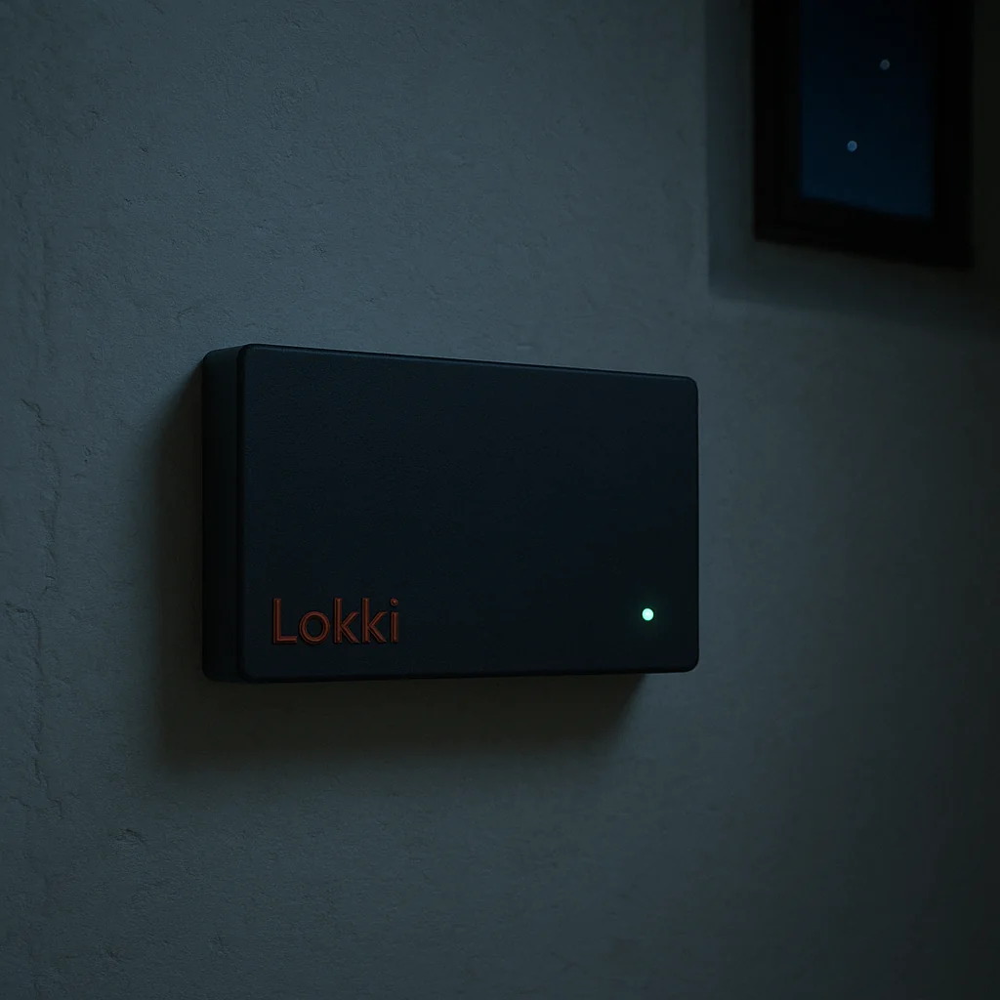

Mains in
230 V AC · 160 W max
Single IEC inlet per unit. A 150 W 24 V supply inside; the rest is logic.
Coordinated light for places that try to be quiet.
On a hillside in northern India, a meditation centre has eight small boxes screwed into eight stone walls. Nobody walks the property at sundown to switch anything on.
One by one, at the right minute for the right latitude, the paths warm. The pond lights breathe up. The shrine takes its cue from the shrine next door, not from a server in Frankfurt.
When a guest walks the corridor at three in the morning, the lights notice, brighten the way, and then — with the politeness of a host who would rather not be seen — dim back down.
In the right light, at the right time, everything is extraordinary.
— Aaron Rose56 LEDs · 8 channels · 4 sensors · 2 relays Per unit. Up to eight leaves per coordinator.
230 V AC · 160 W max
Single IEC inlet per unit. A 150 W 24 V supply inside; the rest is logic.
8 channels · up to 7 LEDs each
Each channel drives a series string of up to seven 3 W LEDs through its own constant-current driver. PWM dimming from off to full, smoothly.
2 × SPDT, 10 A
For the loads that don't dim — fans, fountains, switched circuits.
4 × PIR
Wired in over RJ11. Motion lights the way; the schedule resumes after.
868 MHz · ~1 km line-of-sight
Units talk among themselves. No internet between them.
2.4 GHz · coordinator only
One unit per campus joins the venue WiFi to host the manager dashboard.
light · ambient temperature · I2C
An LDR caps daylight brightness. Ambient temperature comes from an optional I2C add-on. The I2C bus is open for more.
certified PSU · per-channel surge protection
The internal 24 V supply carries the standard industry safety marks. Each of the eight LED outputs is wrapped in a transient-voltage suppressor, so a glitch downstream doesn't reach the logic.
out of stubbornness
Built by an engineer who finds support tickets tedious. So nothing's borderline — conservative current limits, watchdog timer, battery-backed clock, a PSU rated well over spec.
Battery-backed RTC. Sunrise and sunset computed for the venue's latitude; no NTP needed after the first sync.
A simple priority stack: manual override → motion → schedule → default. Decisions take microseconds and never consult anyone.
Units broadcast their state to each other over LoRa, recover from each other's gaps, and stay in step without a server.
A small web UI on the coordinator. Tune schedules, push configs, watch fleet state. No app to install.
Optional reporting bridge to Home Assistant, your notification stack, or whatever your operations team already runs.
WiFi gone? Coordinator gone? Time-sync lost? Every unit keeps its schedule. The dark is not a failure mode.

Every box on the wall is the same. Up to nine per campus, each wired to its own set of fixtures. One of them is told, at the time of configuration, that it is the coordinator; the rest are leaves.
The coordinator hosts the dashboard for the venue manager to tune schedules and push updated configs out to the leaves. If the coordinator's WiFi falls over, the leaves keep their schedules and keep going. Nobody's evening is ruined by an ISP outage.
Lokki is not a smart-home platform. It will not greet you by name, play music, or learn your habits. It will not, ever, ask you to download an app.
It runs the lights, listens for motion, watches the sky, and stays out of the way. That is the entire promise.
The name is āloka — Pali for radiance — folded through a Norse vowel and a Finnish accent.
The only one that is long-range, gateway-free, and fully local at once. No cloud · no subscription · no app — ever.
868 MHz LoRa · ~1 km · no gateway
Reaches across a campus on its own sub-GHz link. No mesh hops to babysit, no gateway to buy, no WiFi between units.
8 channels · up to 56 points
One unit dims up to fifty-six light points across eight constant-current channels — the lowest cost per controlled point of anything here.
no fee · no app · no broker
Nothing to subscribe to and nothing to install. The lights keep their schedule whether or not the internet — or even the coordinator — is there.
| Lokki | Wireless mesh | Wired bus | Room GRMS | DIY / hub | |
|---|---|---|---|---|---|
| Works with no cloud | ● | ◐ | ● | – | ● |
| No subscription, ever | ● | ◐ | ● | ◐ | ● |
| Long-range wireless (~1 km) | ● | – | – | – | – |
| No paid hub or gateway | ● | ◐ | – | – | ◐ |
| Keeps its schedule if the network drops | ● | ◐ | ● | – | ◐ |
| Dimming + motion + light, built in | ● | – | ◐ | ◐ | – |
| Open source, open hardware | ● | – | ◐ | – | ● |
● full · ◐ partial · – none
The lowest cost per controlled light point — and nothing to pay, month after month, for the privilege of keeping your own lights on.
A small ecosystem of personal engineering instruments, each built to solve one specific problem and then, ideally, stop demanding attention.
Where science met poetry, had a brief fling with engineering, and now raises mildly disillusioned but talented offspring.